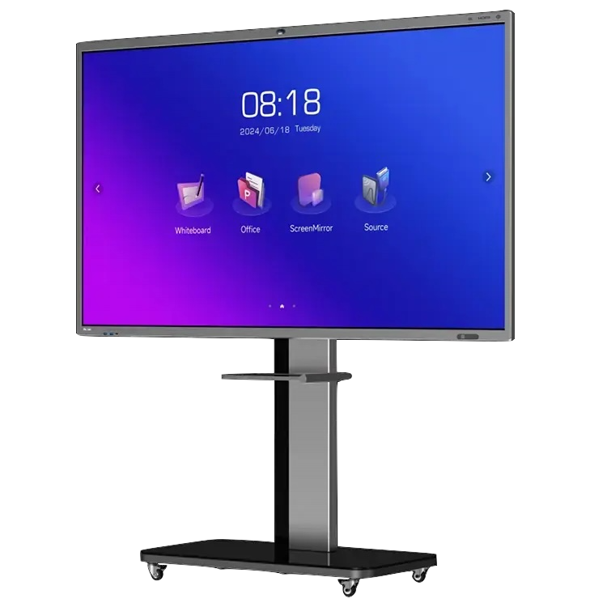
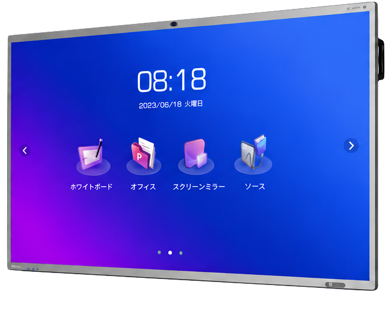

会議が変わる。
意思決定が速くなる。
ホワイトボード・Web会議・プレゼンテーションを
一台に統合した次世代コラボレーションディスプレイ。
WORXHUBが、
会議室を “成果が生まれる空間”へ。


その会議、
本当に生産的ですか？
接続が遅い
機器の接続や切り替えに時間がかかり、会議の開始が遅れる。
Zoom準備が
面倒
会議前の設定やアカウント確認など、準備に手間がかかる。
資料共有が
できない
ケーブルやドングルが必要で、スムーズに画面や資料を共有できない。
保存できない
ホワイトボードの内容を保存できず、議事録や振り返りができない。
発言者が偏る
一部の人だけが発言し、他のメンバーが参加しづらい雰囲気になる。
拠点間会議が
非効率
音声や映像が不安定で、意思疎通が難しく、会議が長引いてしまう。
会議に必要なすべてを、
一台へ。
シンプルに、生産的に。

All-in-One
Meeting Solution
会議に必要なすべての機能を、これ一台で。
4つの機能で、すべての会議をスマートに。
会議に必要なすべてを、これ一台で。
4K大画面タッチディスプレイで
自然な書き心地
ワイヤレス投影で
PC・スマホから瞬時に共有
AIノイズキャンセル
高性能マイク
4Kカメラ
会議内容をその場で共有
導入メリット
会議の生産性を高め、ビジネスのスピードを加速させます。
会議の準備・片付け時間を大幅に短縮できます。
すっきり快適
ワイヤレス接続で、会議室をスマートに。
情報共有がスムーズになり、会議の生産性が向上します。
クリアな映像と音声で、オンライン会議の質を向上。
※効果はご利用環境や運用により異なります。
利用シーン
さまざまなシーンで、チームの生産性を最大化。
会議やプレゼンを効率的に。チームの意思決定を加速します。
お客様との打ち合わせをよりスムーズに、スマートに。
大人数へのプレゼンや研修もクリアな映像と音声でサポート。
インタラクティブな研修で、学びの効果を最大化。
選ばれる理由
WORXHUBは、使いやすさと信頼性で多くの企業に選ばれています。
設置からサポートまで対応
4Kディスプレイ
誰でも使えるUI
国内サポート
導入フロー
お問い合わせから運用開始まで、専任スタッフが丁寧にサポートします。
フォームよりお気軽にご連絡ください。
課題やご要望を丁寧にヒアリングします。
デモをご体験いただき、最適なプランをご提案します。
専門スタッフが納品・設置を行います。
運用サポートやトレーニングでスムーズな活用を支援します。
よくあるご質問
導入前によくいただくご質問をまとめました。
対応しています。ワンタッチでMicrosoft Teams会議に参加でき、面倒な設定は不要です。
対応しています。Zoomをはじめ、主要なWeb会議ツールにワンタッチで接続できます。
可能です。高性能カメラ・マイク・スピーカーを内蔵しており、本体一台でオンライン会議が完結します。
基本的に不要です。移動式スタンドですぐにご利用いただけます。壁掛け設置をご希望の場合はご相談ください。
ございます。国内スタッフによる保守・サポート体制をご用意しています。導入後も安心してご利用いただけます。
可能です。実機でのデモをご用意しています。お問い合わせフォームよりお気軽にご依頼ください。